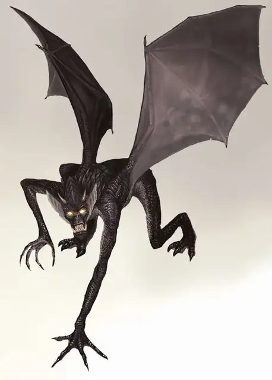

Набассу
Nabassu
Среднее Исчадие (Демон), хаотично-злое

Класс Доспеха 18 (природный доспех)
Хиты 190 (20к8 + 100)
Скорость 40 футов, летая 60 футов
| мод | спас | ||
|---|---|---|---|
| СИЛ | 22 | +6 | +11 |
| ЛОВ | 14 | +2 | +7 |
| ТЕЛ | 21 | +5 | +5 |
| мод | спас | ||
|---|---|---|---|
| ИНТ | 14 | +2 | +2 |
| МДР | 15 | +2 | +2 |
| ХАР | 17 | +3 | +3 |
Навыки Восприятие +7
Сопротивление урону некротическая энергия, огонь, холод; дробящий, колющий, рубящий от немагических атак
Иммунитет к урону яд
Иммунитет к состояниям отравление
Чувства тёмное зрение 60 футов, пассивное Восприятие 17
Языки Бездны, Телепатия 120 фт.
Опасность 15 (13000 опыта)
Бонус мастерства +5
Среда обитания Болото, Город, Подземье
Особенности
Демонические тени. Набассу затеняет вокруг себя пространство радиусом 10 футов. Немагический свет не может осветить эту область с тусклым светом.
Пожиратель души. Набассу может поглощать душу существа, убитого им в течение последнего часа, исключая такую возможность относительно нежити и конструктов. Поглощение требует нахождения набассу в пределах 5 футов от трупа на протяжение 10 минут. После каждого такого поглощения, набассу получает количество Костей Хитов (к8), равное половине имеющихся Костей Хитов у существа. Совершите броски этих Костей, увеличивая значение количества хитов на выпавший результат. За каждые 4 Кости Хитов, использованных таким образом, набассу будет причинять дополнительно 3 (1к6) урона при попадании. Набассу сохраняет это преимущество на протяжении 6 дней. Существо, чья душа была поглощена набассу, может быть возвращено к жизни только заклинанием исполнение желаний [wish].
Сопротивление магии. Набассу совершает с преимуществом спасброски от заклинаний и прочих магических эффектов.
Магическое оружие. Атаки оружием набассу являются магическими.
Действия
Мультиатака. Набассу использует Крадущий Душу Взгляд и совершает две атаки: одну когтями и одну укусом.
Когти. Рукопашная атака оружием: +11 к попаданию, досягаемость 5 фт., одна цель. Попадание: 17 (2к10 + 6) рубящего урона.
Укус. Рукопашная атака оружием: +11 к попаданию, досягаемость 5 фт., одна цель. Попадание: 32 (4к12 + 6) колющего урона.
Крадущий душу взгляд. Набассу выбирает целью одно существо в пределах 30 фт. от себя, которое он может видеть. Если цель может видеть набассу и не является конструктом или нежитью, то она должна преуспеть в спасброске Харизмы Сл 16, иначе её максимальное значение хитов будет понижено на 13 (2к12), после чего набассу получит временные хиты в количестве, равном выпавшему значению. Понижение хитов длится до совершения целью короткого или продолжительного отдыха. Цель умирает, если её максимальное значение хитов опустится до 0, и, если цель является гуманоидом, она немедленно восстаёт в виде упыря под контролем набассу.
Описание
Неутолимые набассу скитаются по всей мультивселенной в поисках душ для утоления своей жажды.
Если они посчитают, что смогут убить существо и поглотить его душу, то незамедлительно нападают на него, даже если это существо – демон, в том числе и на себе подобных набассу.
Ненавистные изгои. У демонов есть немного правил, но на убийство одного из своих сородичей у этих исчадий вряд ли поднимется бровь. Однако, пожирание душ – это уже совсем другое. По этой причине, большинство демонов избегают набассу и принуждают их жить на окраинах Бездны. Там, набассу сгрызают слабых демонов, а если потребуется, они соберутся группой, чтобы завалить добычу побольше. Некоторые особо могучие набассу могут даже охотиться за амулетами лордов демонов.
Демонические нарушители. Всякий раз, как магия вытягивает демонов из Бездны в Материальный план, набассу стараются быть призванными, чтобы оттуда они смогли насладиться пиршеством душ. Если набассу призовётся, то он попытается высвободиться и поглотить душу призывателя, а затем приступает к поиску и пожиранию душ других существ, встретившихся у него на пути. Единственным способом избежать такой участи, призыватель должен регулярно обеспечивать поставки душ набассу, что позволит прожорливому демону быть более сговорчивым до тех пор, пока не закончатся запасы душ.